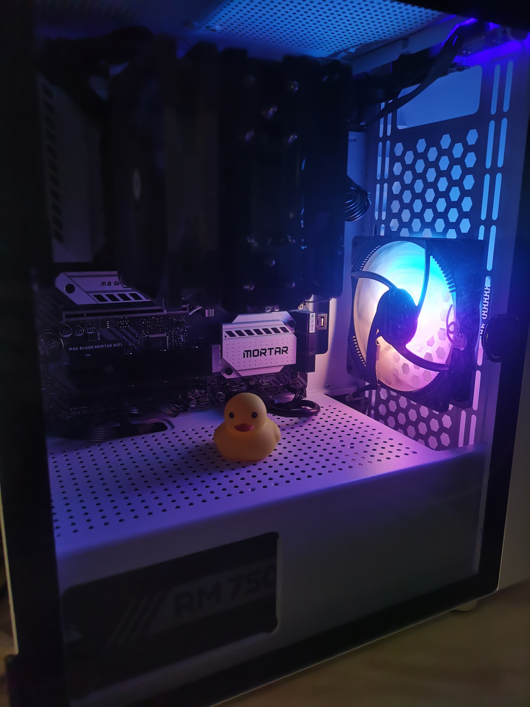

Windows开发配置
前言
前不久组装了自己的第一台电脑，在从旧设备迁移到新设备的过程中，一切编程环境都需要重新配置，太痛苦了！后面室友推荐了一个使用Windows虚拟机作为主力机器的方法，非常不错，故此记录分享一下。
旧设备
旧设备是我上大学的时候买的，现在已经使用了五年多。没有维修过，就是内存从8GB升级到16GB，最后升级到32GB了。最后一次升级内存条的时候，我清灰了一次，换了利民的硅脂，换了电池（电脑是惠普著名的鼓包精灵）。
顺便说一下，利民是TFX，比较贵。我一开始是从海鲜市场收了半管，40多元。之前用的硅脂都是比较润的，没想到利民的硅脂是干干的，就像牙膏放久了的前面那点，很难抹开。一开始我还以为是硅脂过期了啥的，擦掉了很多（心疼啊）。后面装机的时候，硅脂不够用了，又自己买了全新的一管TFX硅脂，也是干干的。这时候我才知道，高级的硅脂就是干干的，比较难抹开的那种！

新设备
旧设备用着还是比较顺手的，就是最近编程需要用到7、8个虚拟机搞集群，32GB内存内存也不够用了，CPU也不够用了，CPU使用率总是100%，有时候移动鼠标都是一卡一卡的。干脆组装了一个台式机，比买笔记本便宜一点。

新设备的CPU、主板、电源都是从海鲜市场淘的，一开始预算是4千，后面出现各种情况，费用到了5千。（如果你的硬盘买二手的话，会更便宜。我的存储设备都是全新的）。
插曲：关于散热
机箱我是从某东那里买的长城阿基米德5，图省事散热器也是买的长城霄龙500，这个散热器100元左右。然后就翻车了，开机后7%的CPU使用率，温度74摄氏度，风扇满速。后面都不敢用了，赶紧关机，看了一天的小机箱散热器，最后换了利民的散热器AK120PLUS，也就比之前的散热器贵了50元。

换了散热器后敢进行散热压力测试了，几乎满载的情况下，温度只有60多摄氏度。好在长城的散热器是某东买的，赶紧退款了。


使用虚拟机作为工作主力机器
使用虚拟机的好处
- 换新设备的时候爽啊，直接复制VMDK等文件过去就完成了迁移，环境啥的都不需要重新配置。
- 可以打快照，不怕搞坏了机器。
- 关机的时候可以暂停虚拟机，保留现场，开机时直接恢复。
使用虚拟机的前提条件
- 配置高一点。
- 最好是使用固态硬盘，不然体验会打折扣。
环境说明
- 宿主机最好是windows专业版，后面有个组策略配置需要用到。
- 虚拟机是专业版或者家庭版都无所谓，虚拟化平台是VMware Workstation 16 Pro。关于在VMware里面安装Windows虚拟机的方法，大家可以网上自行搜索一下。主要是准备一个空U盘，然后使用微软官方工具制作启动盘，启动虚拟机的时候选择从U盘启动然后安装即可。
一些让虚拟机更好用的配置
使用固态硬盘且一次性分配硬盘空间
- 一次性分配硬盘，性能更高

配置自动登录
- 这样就不用每次都输入密码了

开机后自动全屏

自动定时快照

高级配置，照着设置就行

物理机开机自动虚拟机，虚拟机关机自动暂停虚拟机
- 编写开机脚本

- 编写关机脚本

- 编辑组策略，设置机、开机时做一些操作

- 开机，注意是：用户配置->Windows设置->脚本->登录。


- 关机，注意是：计算机配置->Windows设置->脚本->关机。


环境配置
仅供参考
软件安装推荐
- 远程控制：向日葵，可以在没有公网IP的情况下实现远程访问
- 即时通讯：飞书、微信
- IDE：Pycharm、IDEA、Sublime
- 基础工具：Git、OpenJdk、Maven
- 网络工具：FinalShell、Clash
- 截图：Snipaste
Windows终端
- https://learn.microsoft.com/zh-cn/windows/terminal/install
- 更加美观的终端工具，可以增加一个配置文件，使用GitBash，效果如下

WSL
- Ubuntu子系统，一个不使用虚拟机的情况下使用Linux的方法，端口啥的都共用当前机器的。
结束
- 至此，Windows虚拟机配置完毕，可以正常使用啦。个人使用体验是没有什么不一样的，就是开机慢了点。因为需要先开启物理机，然后再开启（恢复）虚拟机。